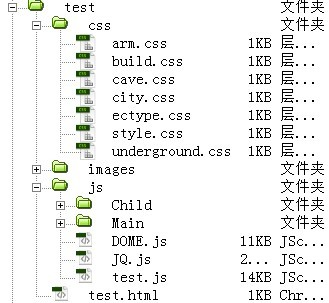
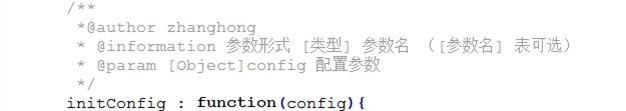
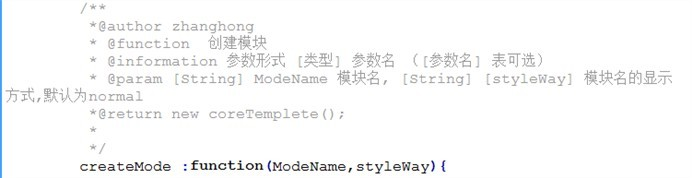
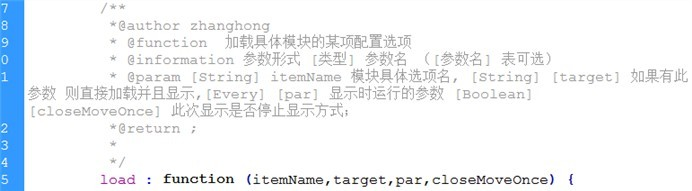
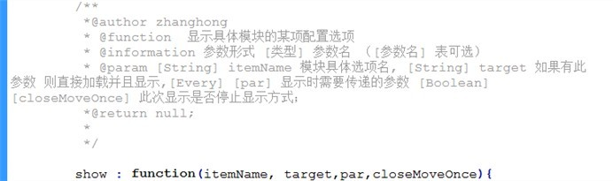
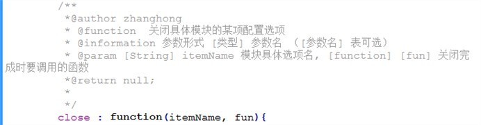

此框架为JQ 类级插件 开发此框架目的为简化WEB 应用的开发， 力求于符合MVC思想
- DOM树结构层次化编写
- DOM 编程的模块化加载和管理
- DOM 视图的多样式组合显示
废话不说了现在开始简单的教程， 本人善有自知之明，不求能写的绘声绘色，努力保证大家看懂 下面以一个简单例子开始。
- 我们假设是在做一个 游戏类应用我们把这个游戏大致分为城镇和副本2个主要部分，其下的字部分分别为建筑,军队以及地下城,山洞. 结构如下
- 城镇(city)
- 建筑（build)
- 军队（arm）
- 副本（ectype）
- 地下城（underground）
- 山洞（cave)
从正常的逻辑上来说城镇(city)和副本（ectype是在同一层级,并具有相同的显示效果. 我们且为他们定义 Main模块 ;同理建筑（build），军队（arm），地下城（underground），山洞（cave）我们为他们定义 Child模块;
---------------文件结构如下---------------------------- 
---------------编写 test.html文件内容如图----------------------------
<!doctype html>
<html>
<head>
<meta charset="utf-8">
<title>无标题文档</title>
<link rel="stylesheet" type="text/css" href="css/style.css">
<script src="js/JQ.js"></script>
<script src="js/DOME.js" ></script>
<script src="js/test.js"></script>
</head>
<body>
<div id="Game">
<div id = "Main"></div>
<div id = "Child"></div>
</div>
</body>
</html>
在此页面 我们中导入了三个script 文件 分别是 JQ.js (JQuery 库)， DOME.js(层次化框架)，test.js(测试文件); 按照刚才的逻辑 我们在 Game层下把它分成了2层 为Main 和 Child 层;
<div id = "Main"></div>
<div id = "Child"></div>
在test,js 中 对2个模块进行配置设置. 配置格式为 var modeConfig = {“模块名”:{“该某块下的具体选项”}}
modeConfig = {"Main":{"city" : "city配置","ectype" : ""},
"Child":{"build" : " ","arm" : "","cave" : " ",
"underground": " " }
}
"city": {
"js": "js/Main/city.js",
"css": "css/city.css",
"loadData":function(pars){city.loadData(pars)},
"initData":function(cityEle){city.initData(cityEle)},
"htmlStr":HtmlObj["city"],
"beginCss":"normal",
"showWay":"normal",
"closeWay":"normal"
}
//HtmlObj["city"]结构
var HtmlObj = {"city":'<div class = "city" >\
<p>城镇主页面</p>\
<div id = "nav">\
<input id="build" type="button" value="建筑"/>\
<input id="arm" type="button" value="军队"/>\
<input id="ectype" type="button" value="副本"/>\
<div>\
</div>',
}
$.MODE.initConfig(modeConfig);
initConfig 函数的细图 
配置显示方式的目的是为提供显示方式的选择，实现灵活的显示方式的搭配； 配置格式为 var moveStyleConfig = {“显示方式名”:{此方式名下的具体显示方式类别}}；
var moveStyleConfig = {
"sild":{
"beginCss":{"left":"640px"},
"showWay":{ "left": "0px"},
"colseWay":{"left":"-640px"},
"runTime":500,
},
}
$.MODE.setStyle(moveStyleConfig);
配置好了模块 以后 接下来就是 创建 Main 和Child 具体的模块
var mainMode = $.MODE.createMode("Main","sild");
var childMode = $.MODE.createMode("Child","salce");

此方法的第2个参数为此模块的显示方式, 作用范围为此模块的下的所有配置选项,如果要针对该模块特定的选项进行显示方式的设置的话, 请在具体的选项下进行 beginCss，showWay ，closeWay 的设置 如
"city": {
"js": "js/Main/city.js",
"css": "css/city.css",
"loadData":function(pars){city.loadData(pars)},
"initData":function(cityEle){city.initData(cityEle)},
"htmlStr":HtmlObj["city"],
"beginCss":"dorp",
"showWay":"sild",
"closeWay":"dorp"
},
//直接加载并且显示
mainMode.load("city","#Main","我是城镇在显示的时候调用的哦",true,true)
//进行预加载 模式
mainMode.load("ectype")
childMode.load("arm")
childMode.load("build")
childMode.load("cave")
childMode.load("underground")
Load函数的细图 
childMode.show("build","#Child");
show函数的细图 
childMode.close("arm")
close函数的细图 
模块的运用总流程为 先加载模块配置 --》加载显示方式配置（可选）--》创建模块———》 加载模块 --》显示模块———》关闭模块、